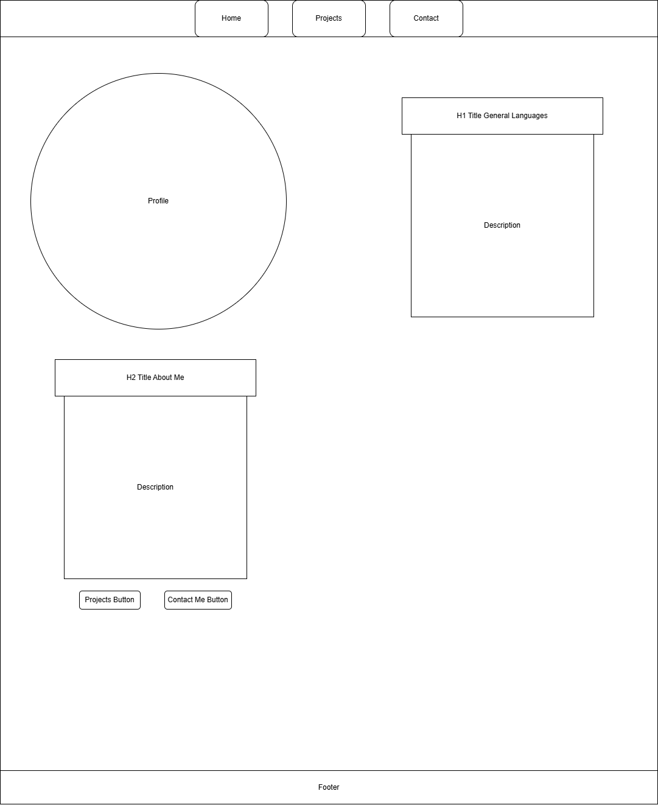
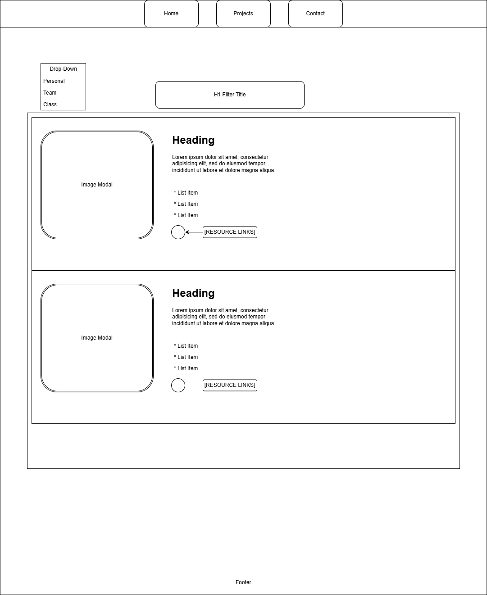
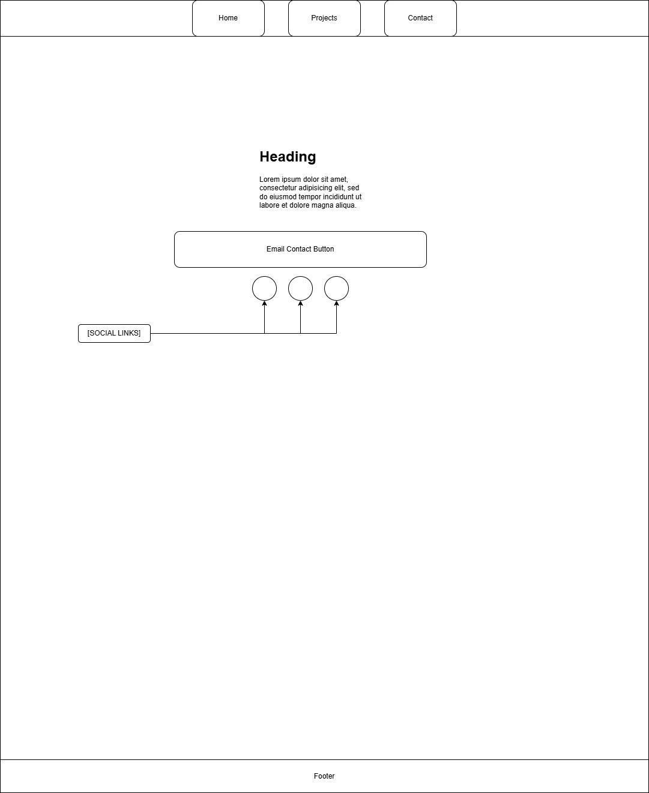

Overview
Purpose
The purpose of this site is to be a portfolio page for my class and personal projects.
Audience
The audience would mainly be for employers to look at when receiving my resume.
Dynamic elements
This portfolio will have general information about me, the different projects with a drop down to filter which specific projects to view, and modals for the images of the projects for more interactivity for users to see different projects.
Branding
Website Logo
Style Guide
Color Palette
Palette URL: https://coolors.co/396e94-e7c24f-a43312-381d2a-aabd8c| Primary | Secondary | Accent 1 | Accent 2 |
|---|---|---|---|
| [#BF0A8A] | [#54CDB4] | [#3D018A] | [#F92665] |
Pseudocode for your project
Develop an object that contains necessary information for each project such as title, description, images, links, etc. Create the variables that will connect to the HTML for the drop-down filter menu and the modals for the project images. Write function for filtering the list of objects Function for the project filters that will connect to a HTML drop-down menu with the filter names, Class Projects, Personal Projects, and Team Projects. Function for the Modals which will include multiple images for each project.
Wireframes
Create wireframes for your project page(s). One for each page and list them here.
Landing page


